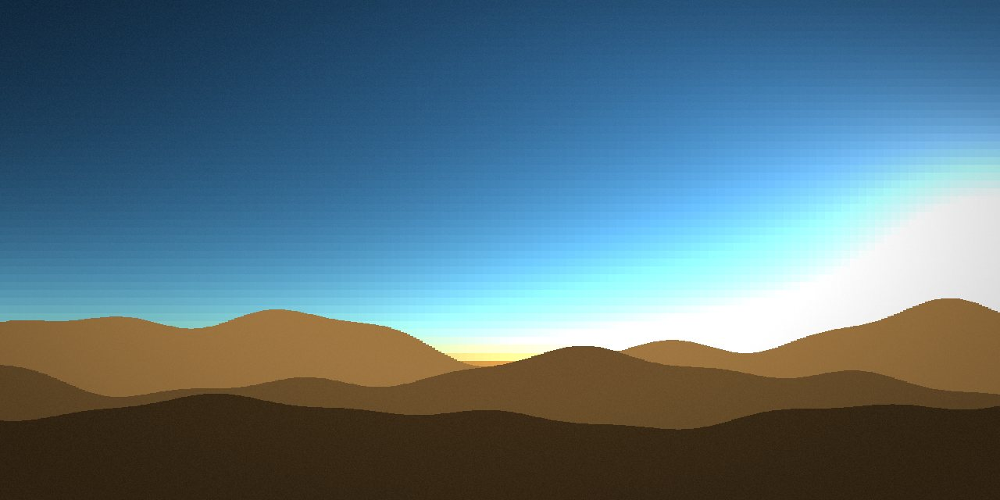
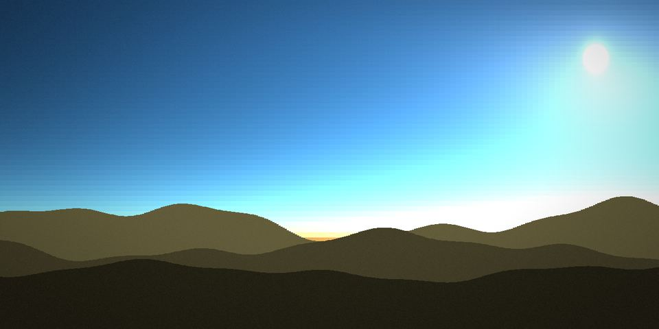
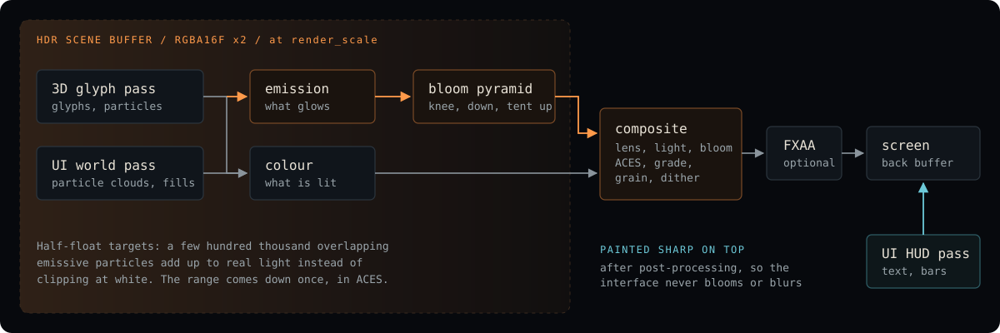
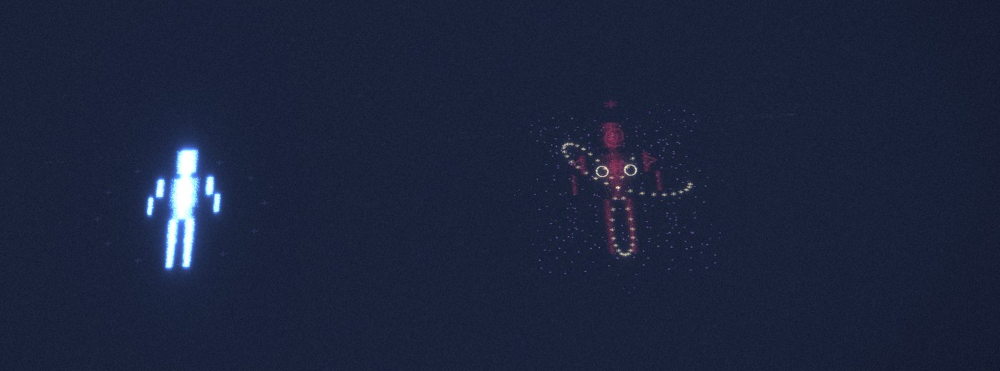
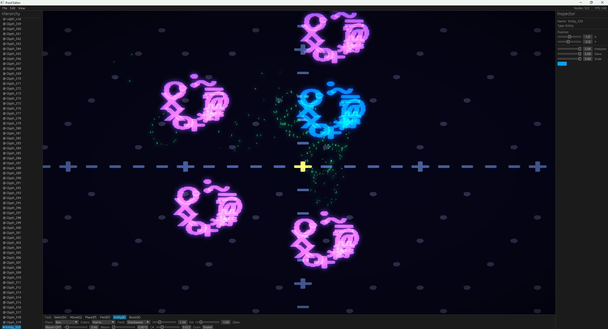

Functions as animation
Attractors, Perlin noise, logistic map, Collatz, Lissajous, Mandelbrot escape, springs. Any glyph can carry a life_function that drives its position or colour.

A Rust rendering engine where every visual is the output of a mathematical function. Glyphs and particles are moved by differential equations and force fields, and drawn in HDR.
FIG. 1The sky example from 16:20 to dusk, captured frame by frame with PROOF_SHOT and played forward and back. Every cell of that sky is a scattering integral.
Nishita sky
The sky is 120 by 56 cells. For each one, every frame, nishita_sky::compute_sky_color integrates Rayleigh and Mie single scattering along the view ray and along a second ray toward the sun.
No gradient is painted anywhere. The blue at three o'clock, the orange band at sunset and the dark teal after it are the same integral with the sun somewhere else. The mountains are sums of sines lit by the sky just above the horizon.

FIG. 2Forty real frames from cargo run --release --example sky. Times and elevations are the ones the demo prints.
FIG. 3cargo run --release --example lorenz. Teal is slow, amber is fast.
Strange attractors
Each point is a state advanced every frame by the engine's own RK4 step. Nobody drew the two wings; that is where the equations send the points. The same module carries Rossler, Chen, Halvorsen, Aizawa, Thomas, Dadras and more, and any of them can drive a force field.
for p in points.iter_mut() { for _ in 0..SUBSTEPS { *p = rk4_step(lorenz, *p, h); } }
Quick start
You need stable Rust and a GPU with OpenGL 3.3. Windows and macOS need nothing else. On Linux, install the ALSA headers first: sudo apt install libasound2-dev pkg-config.
The first build compiles the whole engine and takes a few minutes. Use --release; the demos simulate tens of thousands of particles a frame.
git clone https://github.com/Mattbusel/proof-engine.git cd proof-engine cargo run --release --example sky cargo run --release --example lorenz
One glyph that breathes, one strange attractor pulling on it.
[dependencies]
proof-engine = "0.2"
use proof_engine::prelude::*; fn main() { let mut engine = ProofEngine::new(EngineConfig::default()); engine.spawn_glyph(Glyph { character: '@', position: Vec3::ZERO, color: Vec4::new(0.0, 1.0, 0.8, 1.0), emission: 1.2, life_function: Some(MathFunction::Breathing { rate: 0.4, depth: 0.15 }), ..Default::default() }); engine.add_field(ForceField::StrangeAttractor { attractor_type: AttractorType::Lorenz, scale: 0.2, strength: 0.4, center: Vec3::ZERO, }); engine.run(|_engine, _dt| {}); }
What is inside
Attractors, Perlin noise, logistic map, Collatz, Lissajous, Mandelbrot escape, springs. Any glyph can carry a life_function that drives its position or colour.
Gravity, vortex, electromagnetic, strange attractor, shockwave, tidal, flow, dipole, with linear, inverse-square, exponential or Gaussian falloff.
Entities are glyph clusters held by force cohesion. Binding strength follows HP, so a hit knocks matter loose instead of playing an animation.
Half-float scene buffers, a bloom pyramid, ACES, lens, light shafts, shadows from matter, grain and dither. Every standing parameter is a field on RenderConfig.
Rigid bodies with SAT, soft bodies, Eulerian fluid. 48 kHz synthesis with FM, filters, drive and reverb. Sound is synthesised, not sampled.
Tectonics, erosion, climate, rivers, settlements and history; Lotka-Volterra and SIR ecology; a bytecode VM with closures.

FIG. 4What runs on the GPU every frame. A game drawn as screen-space matter gets bloom, grade and grain on all of it, with a readable HUD over the top.
Demos
Every one is cargo run --release --example <name>. Close the window, or press Esc where the demo says so, to quit. These are the ones to start with.

FIG. 5convergence: the red fighter has taken damage and its binding is failing.

FIG. 6Proof Editor: place glyphs, fields and entities; save scenes as JSON.
| Example | What you see |
|---|---|
| sky | A day over a mountain range, every sky cell a Nishita scattering integral. Space pauses, Up/Down change speed. |
| lorenz | 40,000 points on the Lorenz attractor, integrated with RK4 and drawn into the HDR world pass. Left/Right turn the view. |
| convergence | Two particle-built fighters in an arena with an orbiting camera; hits knock matter loose. |
| supernova | A star pulses, collapses, explodes and settles into a Lorenz nebula. |
| hello_glyph | The smallest program: one breathing @ and a gravity field. |
| colossus | GPU density entities: millions of particles from sixteen bones. Needs a strong GPU. |
| apotheosis | A character built on signed distance fields, about 10.8 million particles. Needs OpenGL 4.3. |
Capture
Any program built on Proof Engine can write its own frames, read straight back off the GPU after post-processing, with no code changes. PROOF_HIDDEN=1 keeps the window invisible and unfocused, so it runs while you use the machine.
The sky, Lorenz and convergence frames on this page were all written this way.
PROOF_HIDDEN=1 PROOF_FIXED_DT=60 \
PROOF_SHOT='frames/f_{n}.bmp' PROOF_SHOT_AT=560 \
PROOF_SHOT_EVERY=2 PROOF_SHOT_COUNT=240 \
cargo run --release --example sky
PROOF_FIXED_DT steps the simulation at a fixed rate, so a sequence plays back at true speed however long each frame took to capture. PROOF_WINDOW=1920x1080 sets the size.